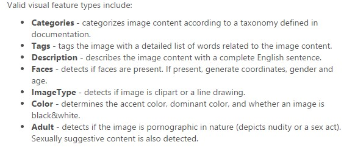

Walkthrough - Analyze HandWritten Text
How to create a GET request
1. Request URL - https://[location].api.cognitive.microsoft.com/vision/v1.0/textOperations/{operationId}
2. Request Parameters
- operationId: Type of media being sent - Ex: application/json
- Ocp-Apim-Subscription-Key: (Your unique subscription key)
3. Request Headers
- visualFeatures (optional): Which visual feature types to return
 - details (optional): Which domain-specific details to return. Currently the options are celebrities and/or landmarks
- language (optional): Which language to return. Currently the options are en for English or zh for Chinese.
4. Request Body - URL or raw image binary to be analyzed by the API
Ex: {"url": "https://www.wassonnursery.com/wp-content/uploads/2016/07/FruitTrees.jpg"}
Example of a complete POST request
REST response: